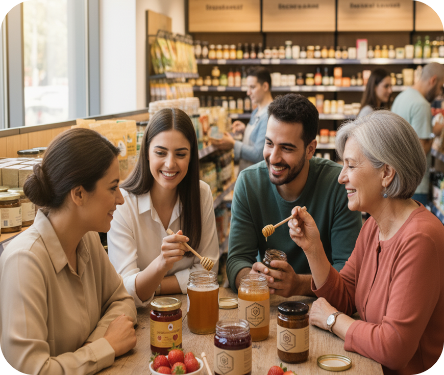
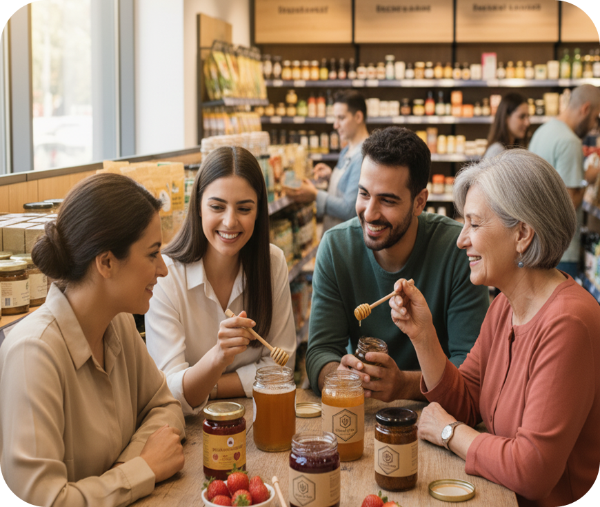
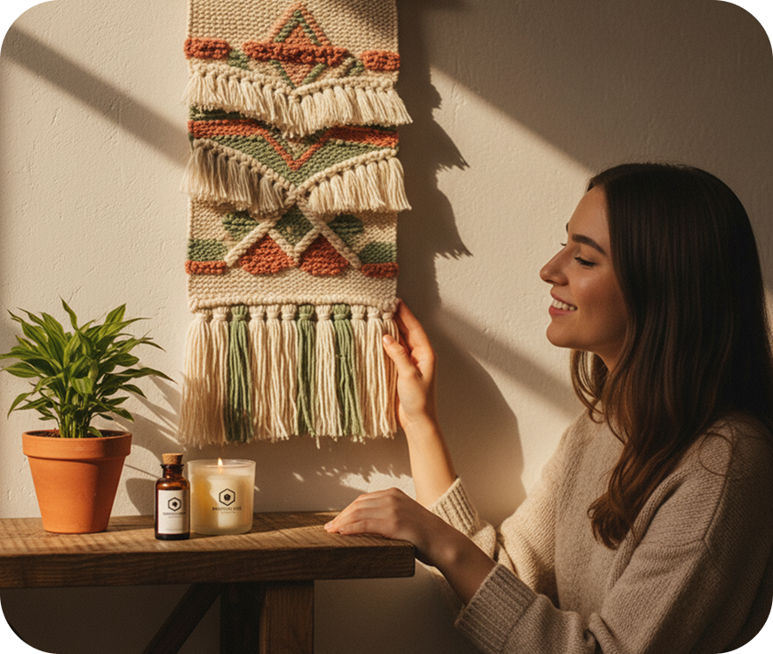
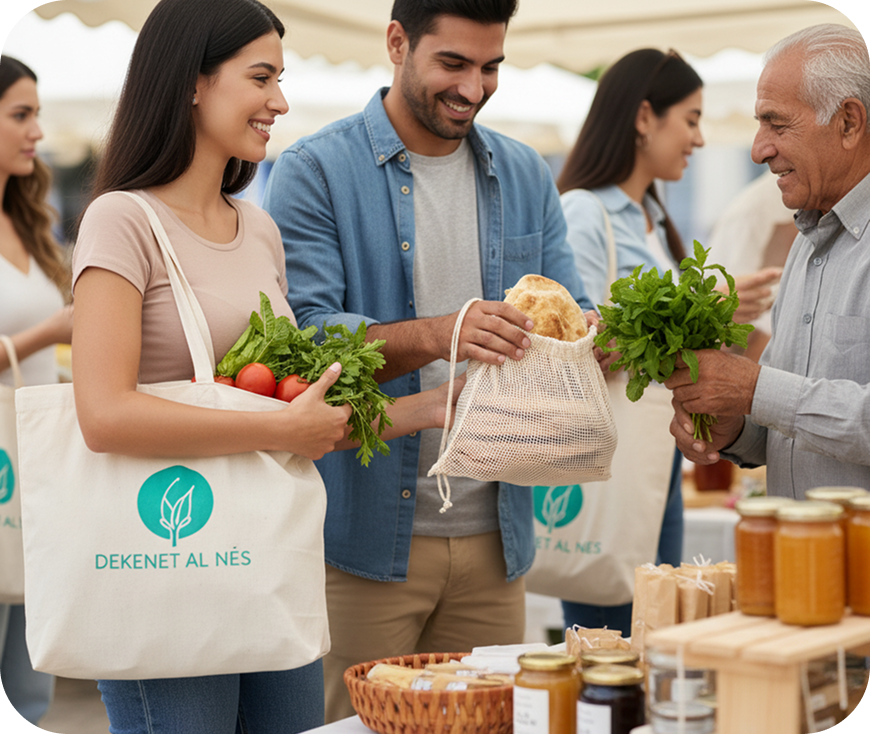
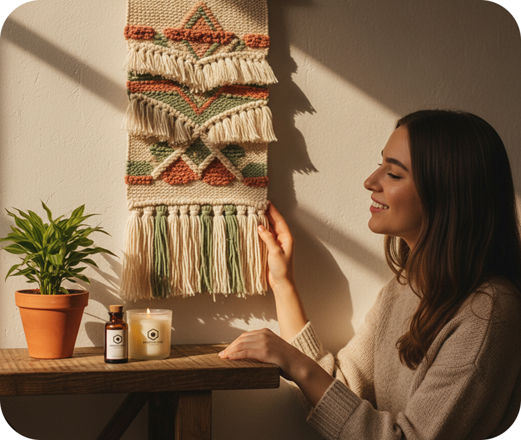
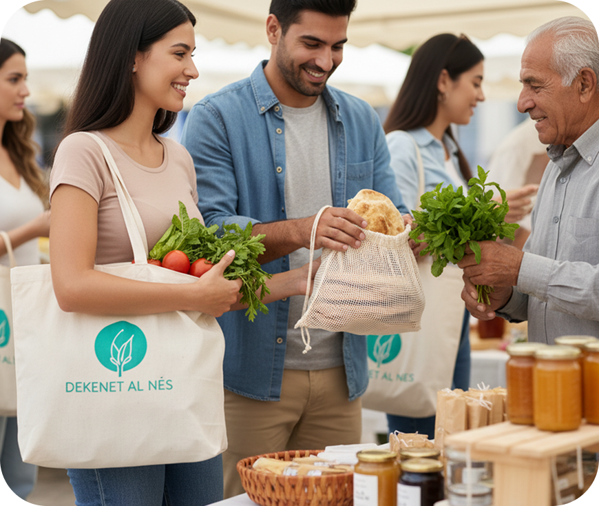

Dekenet Al Nes is a solidarity initiative founded in Lebanon to support local communities during difficult times. We aim to empower small producers, artisans, and farmers by helping them sell their eco-friendly and handmade products. Since 2019, our mission has been to promote sustainable living and encourage conscious consumption one local product at a time. Through our growing network of partners and beneficiaries, we continue to create positive social and environmental impact across Lebanon. By offering a refill and reuse shopping model, we help reduce packaging waste while making essential goods more accessible and affordable for families. Our store acts as both a marketplace and a community hub, bringing people together to support local production, protect the environment, and build a more resilient Lebanon.
Our Story

 

 



Our Mission

Eco-Friendly Shopping
Our mission is to offer low-waste, eco-friendly products that reduce plastic from everyday life and make sustainable choices simple. We focus on practical solutions that help families shop responsibly, refill with ease, and lower their environmental footprint—one small habit at a time.

Refill & Reuse System
Our mission is to cut single-use plastic by promoting refill and reuse, a proven approach that can reduce nearly half of ocean-bound plastic waste. Through our zero-waste model, we empower consumers to make practical choices that directly lower pollution, conserve resources, and build a cleaner Lebanon.

Community Impact
Our mission is to empower our community to live sustainably by encouraging collective action against plastic pollution. We believe that when people unite around simple, meaningful habits, like refilling, reusing, and choosing local, real environmental change becomes possible.

Our Promise
We promise to stay true to our values in every step of our journey. At Dekenet Al Nes, sustainability is not a trend—it is a commitment that guides how we source, operate, and serve our community. We carefully choose products that are safe, ethical, and environmentally responsible, ensuring that every refill or purchase contributes to reducing waste and supporting local livelihoods.
We promise to remain transparent about what goes into the items we offer, where they come from, and how they benefit both people and the planet. Our customers deserve honesty, quality, and trust—and we work every day to uphold these standards.
We promise to keep our doors open as a welcoming space for education, connection, and collective action. Whether through workshops, clean-up events, or collaborations with local producers, we strive to inspire sustainable habits that last. As we grow, we stay rooted in our mission: to make eco-friendly living accessible, affordable, and meaningful for everyone.